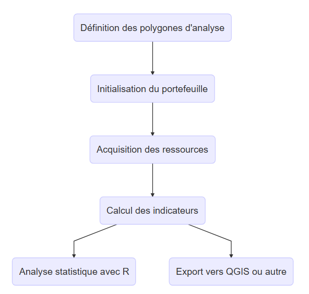

library(tidyverse)
library(lubridate)
library(sf)
library(tmap)
library(geodata)
library(cowplot)
library(wdpar)
library(gt)
library(mapme.biodiversity)Données spatiales
Un focus général sur l’ensemble des données du développement
https://fbedecarrats.github.io/class_polecon_of_numbers_fr/
Un point sur les données de forêts et d’aires protégées
Chargement des packages
Aires protégées
Les études sur les aires protégées s’appuient fréquemment sur la base WDPA (World Database on Protected Area), consultable en ligne sur https://protectedplanet.net. On s’aperçoit dans le cas de Madagascar que cette base de données comporte de nombreuses erreurs (qu’on étudiera plus bas). La base rassemblée par l’association Vahatra dans le cadre de la monographie qu’elle a coordonnée sur l’ensemble des aires protégées terrestres malgaches semble beaucoup plus fiable [@goodman_les_2018]. Les données en question sont disponibles sur le portail https://protectedareas.mg avec une licence creative commons (CC-BY).
Les données chargées ont été préalablement reformatée.
# On charge la version enregistrée en geojson
AP_Vahatra <- st_read("data/Vahatra/AP_Vahatra.geojson")
# On génère un rendu cartographique
tmap_mode("view") # En mode interactif
tm_shape(AP_Vahatra) +
tm_polygons(col = "cat_iucn", alpha = 0.6, title = "Catégorie IUCN",
id = "nom",
popup.vars = c("Acte de création" = "creation",
"Année de création" = "an_creation",
"Surface (ha)" = "hectares",
"Nom complet" = "full_name",
"Gestionnaire" = "gest_1")) +
tmap_options(check.and.fix = TRUE)Ancienneté des aires protégées
On peut également réaliser un graphique qui présente l’historique de création des aires protégées.
# On modifie la variable "nom" pour qu'elle soit ordonnée par date de création
AP_Vahatra <- AP_Vahatra %>%
mutate(nom = reorder(nom, desc(date_creation)))
# Un premier graphique simple avec des points
AP_Vahatra %>%
ggplot(aes(x = date_creation, y = nom, color = cat_iucn)) +
geom_point()
# avec des segments partant de la date de création jusqu'à aujourd'hui
AP_Vahatra %>%
mutate(nom = reorder(nom, desc(date_creation))) %>%
ggplot(aes(x = date_creation, y = nom, color = cat_iucn)) +
geom_segment(aes(xend = ymd("2023-10-01"), yend = nom), size = 2)Taille des aires protégées
AP_Vahatra %>%
ggplot(aes(x = 0, xend = hectares, y = nom, yend = nom,
color = cat_iucn)) +
geom_segment(size = 2) +
labs(x = "Hectares")Commentez le contenu de ce fichier.
Le package mapme.biodiversity
Le package “mapme.biodiversity” facilite l’analyse de données statistiques sur les aires protégées partout dans le monde [@mapme.biodiversity]. Il permet l’importation d’un nombre important de base de données et le calcul d’indicateurs associés relatifs à la biodiversité qui peuvent être utilisés pour surveiller et évaluer l’efficacité des efforts de protection. Le processus est volontairement simple :

Vahatra_poly <- AP_Vahatra %>%
filter(st_geometry_type(.) == "MULTIPOLYGON") %>%
st_cast("POLYGON")mapme.biodiversity works by constructing a portfolio from an sf object. Specific raster and vector resource matching the spatio-temporal extent of the portfolio are made available locally. Once all required resources are available, indicators can be calculated individually for each asset in the portfolio.
resources <- available_resources() %>%
names() %>%
data.frame()
indicators <- available_indicators() %>%
names() %>%
data.frame()# Constitution d'un portefeuille (voir la documentation)
Vahatra_poly <- init_portfolio(x = Vahatra_poly,
years = 2000:2020,
outdir = "data/mapme_biodiversity",
add_resources = TRUE,
verbose = TRUE)Obtention des données d’obtention, issues de Nelson et al. (2018)
# On choisit le seuil de la distance aux villes de 5000 habitants et plus
Vahatra_poly <- get_resources(x = Vahatra_poly, resource = "nelson_et_al",
range_traveltime = "5k_110mio")Visualisons les données
# On récupère le contour de Madagascar
mada <- gadm("MDG", level=0, path = "data") %>%
st_as_sf()
# On charge les données de Nelson qu'on ne garde que sur l'emprise de Madagascar
nelson <- rast("data/mapme_biodiversity/nelson_et_al/traveltime-5k_110mio.tif") %>%
crop(mada)
# On visualise les données
nelson %>%
tm_shape() +
tm_raster(palette = "viridis", style = "quantile", n = 20, colorNA = NULL) Calcul des informations pour nos aires protégées
# Indicateurs d'accessibilité
Vahatra_poly <- calc_indicators(x = Vahatra_poly,
"traveltime", stats_accessibility = "mean",
engine = "extract")Données topologiques
Le jeu de données NASA/SRTM, ou “Shuttle Radar Topography Mission”, est un ensemble de données topographiques de haute résolution capturé par le radar spatial de la navette spatiale Endeavour en février 2000. Cette mission, une collaboration entre la NASA et le National Geospatial-Intelligence Agency (NGA), avait pour objectif de cartographier la majeure partie de la Terre pour obtenir une représentation précise du relief terrestre. Les données SRTM couvrent la quasi-totalité de la surface terrestre entre les latitudes 60°N et 56°S, offrant une résolution spatiale de 30 mètres pour les données globales.
Grâce à ces données, il est possible d’évaluer l’altitude moyenne d’une aire spécifique. On peut aussi calculer le TRI (Topographic Ruggedness Index), qui quantifie la variation de l’altitude dans un paysage. Il est calculé en prenant la racine carrée de la somme des carrés des différences d’altitude entre une cellule et ses voisines. Un TRI élevé indique un terrain accidenté, tandis qu’un TRI faible suggère un terrain plus plat ou uniforme.
On utilise mapme.biodiversity pour calculer ces indices.
# Modèle numérique de terrain SRTM de la NASA
Vahatra_poly <- get_resources(x = Vahatra_poly , resource = "nasa_srtm")
# Indicateurs d'accessibilité
Vahatra_poly <- calc_indicators(x = Vahatra_poly,
"traveltime", stats_accessibility = "mean",
engine = "extract")
# Indicateurs de relief de terrain
Vahatra_poly <- calc_indicators(x = Vahatra_poly,
indicators = c("tri", "elevation"),
stats_tri = "mean", stats_elevation = "mean")